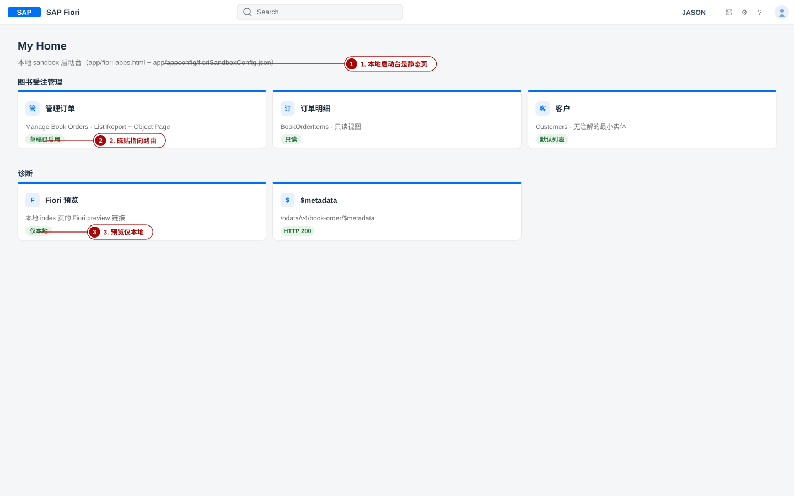
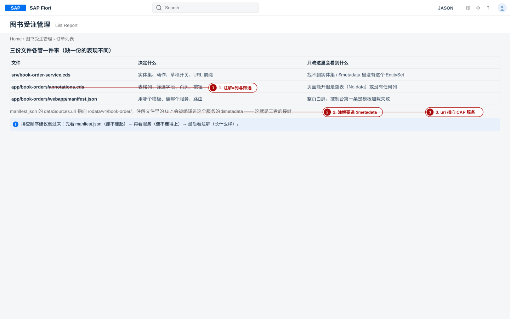
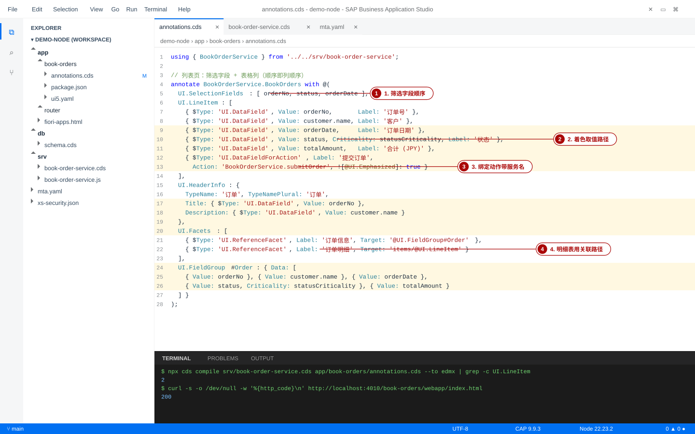
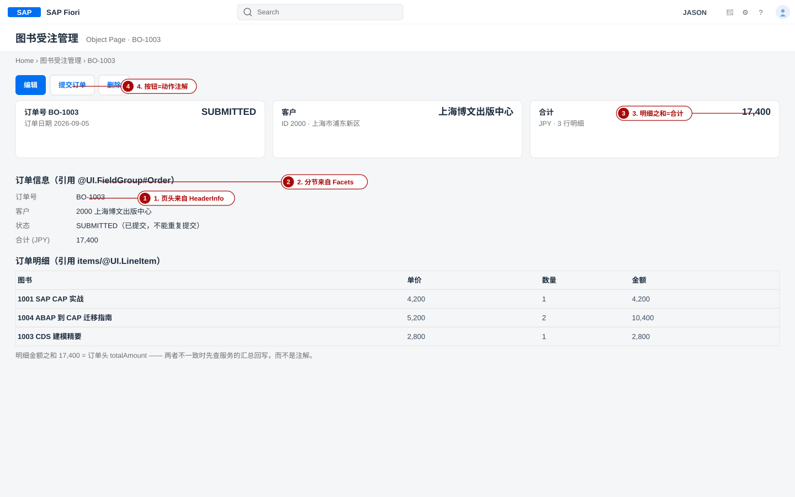
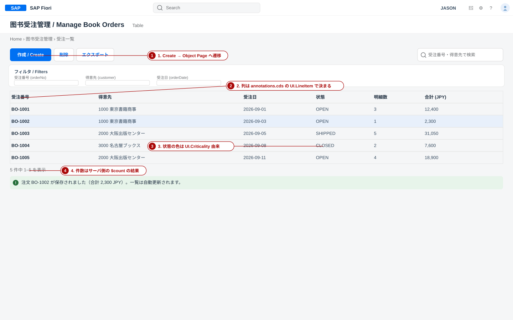
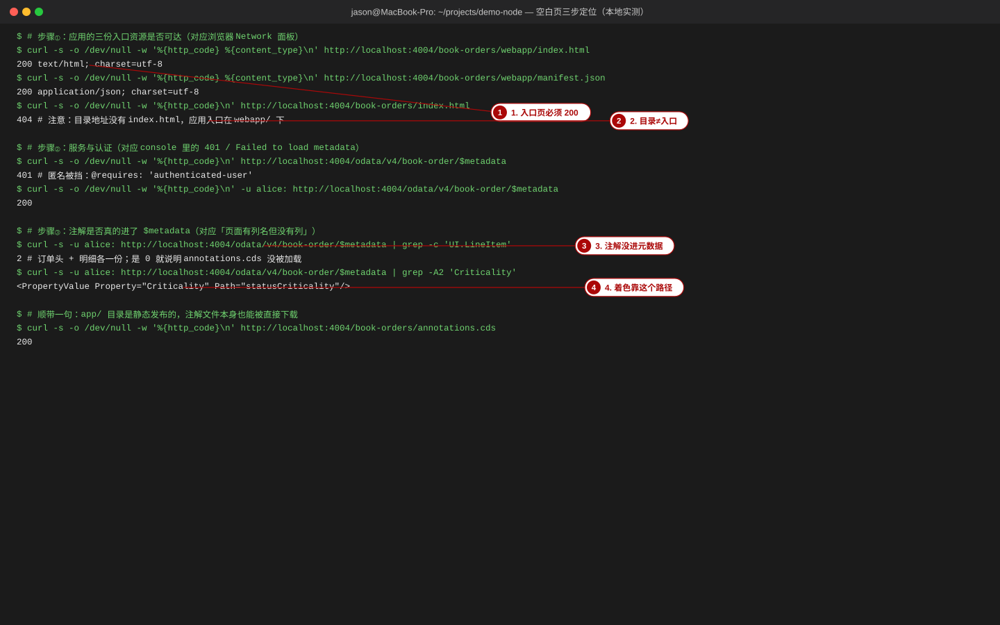
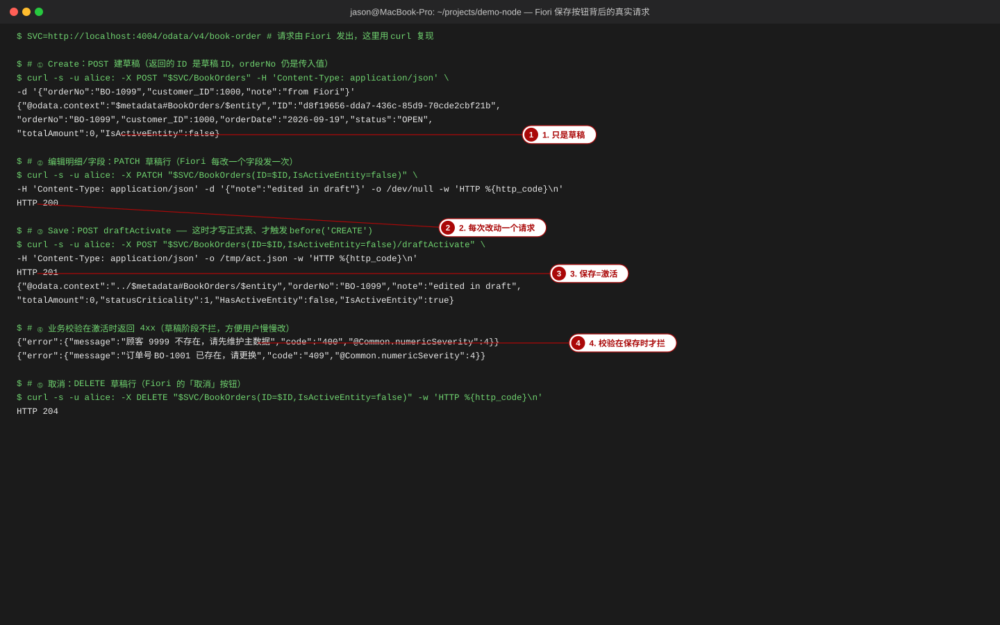
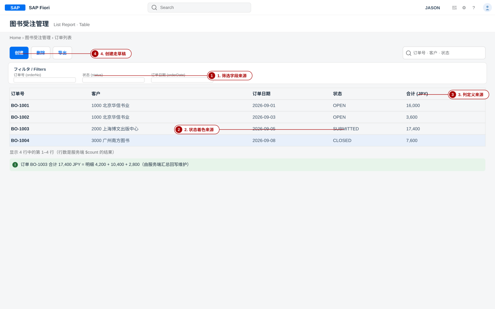

Fiori UI：给 CAP 服务配界面
覆盖对象：app/book-orders/webapp/manifest.json（模板与路由）· app/book-orders/annotations.cds（UI.* 注解）· srv/book-order-service.cds 的 /odata/v4/book-order · cds watch 本地运行 · 草稿请求序列 · cds add ui5 / cds add html5-repo 接入 MTA。本页所有 curl 输出都来自本站示范项目 project-code/demo-node 的本地实测。
- 看一张业务实体，说出它该用 List Report、Object Page、Analytical List Page 还是必须写 freestyle（并给出判断依据，而不是凭感觉）；
- 从零写出一个能跑起来的 Fiori Elements 应用：
app/<app>/webapp/manifest.json的sap.app/sap.ui5/models/routing.targets每个键都说得出来源； - 用
UI.LineItem/UI.SelectionFields/UI.HeaderInfo/UI.FieldGroup/UI.Facets/UI.DataFieldForAction/@readonly/Common.Label把订单列表与详情页配出来（含状态着色与「提交订单」按钮）； - 用
cds watch跑起来并通过/book-orders/webapp/index.html打开，白屏时按「Network → console → $metadata」三步定位； - 说清
Create → 编辑 → Save背后真实发的三个请求（POST 建草稿 → PATCH 改草稿 → POST draftActivate），并解释为什么业务校验错误只在 Save 时冒出来。
本页命令与输出在本机实测过，环境：Node 22.23.2、@sap/cds 9.9.3、@sap/cds-dk 9.9.6、@cap-js/sqlite 2.x，本地服务端口用 4010（避开另一个正在跑的 4004）。示范项目本身在 project-code/demo-node；下面凡是「本站实测」的输出，都是把这个项目的 db/、srv/ 复制到临时目录、再补上 app/book-orders/ 后跑出来的真实响应，改动只限 app/ 目录与一处草稿着色用的虚拟元素（正文会标注）。UI5 与 Fiori Elements 的小版本会改变控制台文案；凡本站没实跑的内容（mbt、cf 的云端输出）都在图注里写明「重绘」，不冒充实机截图。
0. 本页地图：UI 这一层到底在交付什么
前八页交付的是「数据长什么样、服务能做什么、权限怎么管」。本页交付的是人怎么用。在 CAP 里这件事有一个很省力的前提：你几乎不写页面代码。Fiori Elements 是一套「通用前端」——它读服务的 $metadata（实体 + 注解），再读 manifest.json（用哪个页面模板、连哪个服务、路由怎么配），然后把表格、筛选条、详情页、按钮渲染出来。你交付的是声明，不是组件树。
srv/*.cds → $metadata
实体 + 动作 + UI.* 注解 + manifest.json
模板 + 路由 + 服务地址 → Fiori Elements
List Report / Object Page
本站示范项目 demo-node 的 UI 只有一个应用：app/book-orders/，它管两张表——订单头 BookOrders（列表 + 详情 + 提交按钮）与订单明细 BookOrderItems（详情页里的子表）。本页所有例子都落在这两张表与它们的字段上：orderNo、customer.name、orderDate、status、totalAmount、items。
| 文件 / 目录 | 角色 | 本页章节 |
|---|---|---|
app/book-orders/webapp/manifest.json | 用哪些模板、连哪个服务、路由怎么走 | §4 |
app/book-orders/annotations.cds | 列、筛选、页头、分节、按钮（UI.*） | §5 §6 |
app/book-orders/webapp/i18n/i18n.properties | 界面文案（{i18n>Key} 的取值处） | §12 |
srv/book-order-service.cds | 实体集、submitOrder 动作、草稿开关 | §3 §9 |
app/router/ + mta.yaml | 部署后 UI 与服务的唯一入口 | §10 + ⑩ 部署 |
你能用一句话解释下面这个现象，说明你已经理解了 Fiori Elements 的工作方式：同一个服务、同一份数据，改一改注解文件，列表里就多一列、少一个筛选框、状态从灰色变成橙色——前端一行 UI5 代码都没动。如果还说不清「注解是怎么到前端手里的」，先记住这句话：注解被编译进 $metadata，前端每次启动都去读它。
1. 选型：Fiori Elements 还是 freestyle
选型只有一个判断标准：你的页面是不是「列表 → 详情」这种标准业务形态。是，就用 Fiori Elements（省 90% 前端工作量，还白拿草稿、筛选、变式管理、导出、消息条）；不是，就承认要写 freestyle，不要试图用注解硬拗。
1-1 四种标准页面模板：什么时候用哪一个
| 模板 / 页面 | 典型长什么样 | 什么时候选它 | 不要用它的时候 |
|---|---|---|---|
List Report + Object Pagesap.fe.templates.ListReport / .ObjectPage |
一张表（筛选条 + 工具栏 + 行）+ 点行进入的详情页 | 「管理单据」形态：订单、客户、物料、发票。本站示范项目就是这一类 | 表格只是展示、不需要进去改数据时，可以直接 List Report 不配 Object Page |
| Worklist （同属 sap.fe.templates 家族） |
只有表、没有详情页，行上直接带动作 | 待办处理：审批队列、待发运清单。「看一眼 → 点一下 → 消失」 | 需要看明细或分节展示时，还是要 Object Page |
Analytical List Page~sap.fe.templates.AnalyticalListPage |
图表 + 表格联动，带 $apply 聚合 |
分析型查询：按客户汇总销售额、按状态统计订单金额 | 只是普通事务列表强行上图表：筛选语义会对不上（本站未在真实工程里核对过该组件名，以 Fiori tools 生成为准） |
Overview Pagesap.ovp |
一屏卡片墙，每张卡是一个小主题 | 角色首页 / 概览页：销售看板、库存看板 | 要做增删改查流程时，卡片不是表单 |
- 数据来自单个 OData 实体集（或它的关联），字段是模型里已有的；
- 页面结构是「筛选 → 列表 → 详情 → 分节」；
- 需要草稿、消息、变式管理、导出、表格个性化这些标准能力；
- 希望后续 S/4 侧或顾问不改代码就能调字段顺序、加筛选、换表格类型。
- 交互是向导 / 多步表单（Wizard、分步提交），或者一个页面同时改多个实体集的复杂编排；
- 需要自定义可视化：甘特图、日历、地图、拖拽看板、自定义图表（超出 FE 的 Chart/DataPoint）；
- 列表行内需要批量编辑 + 即时计算（像电子表格那样），FE 的表格不提供这种自由编辑模型；
- 要和 第三方 UI 库 / 非 OData 接口深度混用；
- 完全非业务形态的页面（看板大屏、运营可视化）。
折中方案很常用，值得记住：「FE 为主 + 少量自定义扩展」。Fiori Elements 保留了扩展点（extension point / custom section / 自定义列），你可以在 List Report 里插一个自定义按钮、在 Object Page 里加一个自定义 section 放 freestyle 内容。这样 95% 是配置、5% 是代码，比整页 freestyle 便宜得多。
1-2 选型对照：同一批需求在两条路线上的代价
| 需求 | Fiori Elements 路线 | freestyle（UI5 MVC）路线 |
|---|---|---|
| 列表 + 筛选 + 分页 | 注解 + manifest，几十行声明 | View + Controller + 分页/筛选/排序逻辑，几百行 |
| 详情页 + 分节 + 子表 | UI.Facets + 关联路径 | 自己写 Form/Table 绑定与导航 |
| 新建/编辑（含草稿、并发锁） | @odata.draft.enabled 一个注解，前端自动有 Create/Edit/Save/取消 | 要自己实现临时对象、脏检查、并发冲突提示 |
| 业务校验报错展示 | 服务端 req.reject(4xx, 消息) → 消息条自动显示 | 自己接错误、自己做 MessageManager |
| 表格个性化 / 变式管理 / 导出 | 模板自带 | 基本要自己接或放弃 |
| 特殊交互（向导、拖拽、地图） | 做不到，要扩展点或换路线 | 本来就是它的主场 |
2. 两条路径：工具生成 vs 手写文件
一张 Fiori Elements 应用最终就是一个 app/<app>/ 目录：webapp/manifest.json 加几个可选文件。两条路径的区别只在「谁写这些文件」。
| 路径 A：SAP Fiori tools / BAS 向导 | 路径 B：手写 manifest 与注解 | |
|---|---|---|
| 怎么做 | BAS/VS Code 里 Fiori: Open Application Generator → 选 List Report Page 或 Form Entry Object Page → 选数据源（CAP 项目的 OData V4 服务）→ 页面类型与主实体集 | 自己建 app/book-orders/webapp/，写 manifest.json；注解文件与它同目录 |
| 生成什么 | 完整可跑的工程、Page Map / 向导式加字段、注解自动补全与校验、i18n 文件、ui5.yaml | 只有你写的那几个文件 |
| 优点 | 少打错字；Page Map 能图形化加列/加节；注解编辑器有词汇表校验与跳转 | 文件小、可读、可 diff、可复制；理解成本一次搞定；离线也能写 |
| 代价 | 生成物含大量脚手架（Component.js、很多空 key），新人看不出哪些是「必须的」 | 页面上少一个 key 就白屏，必须知道每个键的作用 |
| 适用 | 交付生产应用、团队协作、要长期维护 | 学习、教学、复制模板、无法装扩展的环境 |
CAP 自带一个带 Fiori 界面的示例工程：npx cds add sample（或新建时 cds init myproj --nodejs --add sample）。它会生成 app/browse/、app/admin-books/、app/admin-authors/、app/genres/ 四个 Fiori 应用，每个都有 fiori-service.cds（注解）、webapp/manifest.json、i18n，以及 app/fiori-apps.html + app/appconfig/fioriSandboxConfig.json 这个本地启动台。学习阶段最省力的做法是复制其中一个目录改名，再把注解换成自己的实体——本页 §4 给出的 manifest 就是这条路径整理出来的最小可用版本。注意：CAP 没有 cds add fiori 这条命令（@sap/cds-dk 10.1.2 的 facet 列表里没有 fiori；与 UI 相关的是 sample、ui5、approuter、html5-repo、portal、workzone、app-frontend）。
2-1 手顺：用官方示例生成一套 Fiori 应用并跑起来
- 动作：新建一个带 Fiori 示例的工程（不要在自己已有的项目里乱加，先隔离验证）。
bash
cd ~/projects npx cds init uilab --nodejs --add sample cd uilab && npm install ls app # browse admin-authors admin-books genres fiori-apps.html appconfig services.cds - 动作：部署本地库并启动。
bash
npx cds deploy --to sqlite:db.sqlite npx cds watch - 验证：终端出现
[cds] - server listening on { url: 'http://localhost:4004' }；浏览器打开http://localhost:4004/fiori-apps.html能看到启动台，点磁贴能进 List Report。应用地址是/<app目录名>/webapp/index.html这种形态（示例工程里webapp/index.html由 Fiori tools 或 CAP 的模板提供；本站 §4 的写法是让 CAP 的静态服务直接吃webapp/目录）。 - 验证：确认本地 index 页也给出了入口链接 —— 访问
http://localhost:4004/，CAP 的开发首页会列出所有服务与app/下的 Fiori 应用链接（只在开发 profile 生效）。

3. 三角关系：服务 + 注解 + manifest.json
Fiori Elements 应用活不活，取决于三份输入是否同时对得上。把它们的关系记住，排查时就不会乱猜：
| 输入 | 在哪 | 决定什么 | 只错这一份时的症状 |
|---|---|---|---|
| OData 服务 | srv/book-order-service.cds，URL /odata/v4/book-order | 有哪些实体集、哪些字段、哪些动作/函数、草稿是否开启 | 页面能打开但取不到数据；$metadata 里找不到 BookOrders |
| 注解 | app/book-orders/annotations.cds（UI.*） | 表格列、筛选字段、页头标题、分节、按钮、着色 | 典型的「No data」：请求成功、数据为空或没有可显示的列 |
| manifest | app/book-orders/webapp/manifest.json | 用哪个模板、连哪个 dataSource、路由与 target | 整页白屏：控制台第一条就是模板加载失败或 dataSource 找不到 |
- 注解不会自己走到前端：CAP 把
UI.*注解编译进服务的$metadata，前端启动时读这份元数据。所以「注解写了但没生效」= 先去看$metadata里有没有它（§8 第 ③ 步）。 - manifest 里的 uri 必须指向服务的真实路径：本站是
/odata/v4/book-order/（来自服务定义里的@path）。写错一个字符，症状是白屏或「Failed to load metadata」。
CAP 允许你把注解写进服务定义里，但官方推荐放在 app/<app>/ 下的独立 .cds 文件（本站是 annotations.cds，官方示例称 fiori-service.cds）。理由是关注点分离：srv/ 保持「服务与权限」的语义，app/ 里是「界面长什么样」，两者可以分别演进、分别交给不同的人。关键事实：app/**/*.cds 会被 cds 编译进模型——本站实测 cds watch 的启动日志与 cds build 的任务参数里都能看到 app/* 与 app/*（构建任务的 model 列表是 ['db','srv','app','app/*']），所以放在 app 里的注解不需要任何 import 也会生效。

4. 手顺：写出可用的 manifest.json
先建目录，再写文件。目录结构本身有意义：app/ 下每个子目录是一个独立应用，webapp/ 是该应用的静态根（CAP 会把它发布到 /<子目录名>/webapp/）。
4-1 manifest.json 全文（本站示范项目，可直接复制）
json{ "_version": "1.28.0", "sap.app": { "id": "demo.node.book-orders", "type": "application", "title": "图书受注管理", "description": "CAP 示范项目：订单的 List Report / Object Page", "i18n": "i18n/i18n.properties", "applicationVersion": { "version": "1.0.0" }, "dataSources": { "mainService": { "uri": "/odata/v4/book-order/", "type": "OData", "settings": { "odataVersion": "4.0" } } } }, "sap.ui5": { "flexEnabled": true, "dependencies": { "minUI5Version": "1.136.0", "libs": { "sap.fe.templates": {} } }, "models": { "i18n": { "type": "sap.ui.model.resource.ResourceModel", "uri": "i18n/i18n.properties" }, "": { "dataSource": "mainService", "preload": true, "settings": { "synchronizationMode": "None", "operationMode": "Server", "autoExpandSelect": true, "earlyRequests": true } } }, "routing": { "routes": [ { "pattern": ":?query:", "name": "BookOrdersList", "target": "BookOrdersList" }, { "pattern": "BookOrders({key}):?query:", "name": "BookOrdersObjectPage", "target": "BookOrdersObjectPage" } ], "targets": { "BookOrdersList": { "type": "Component", "id": "BookOrdersList", "name": "sap.fe.templates.ListReport", "options": { "settings": { "entitySet": "BookOrders", "variantManagement": "Page", "navigation": { "BookOrders": { "detail": { "route": "BookOrdersObjectPage" } } }, "controlConfiguration": { "@com.sap.vocabularies.UI.v1.LineItem": { "tableSettings": { "type": "ResponsiveTable" } } } } } }, "BookOrdersObjectPage": { "type": "Component", "id": "BookOrdersObjectPage", "name": "sap.fe.templates.ObjectPage", "options": { "settings": { "entitySet": "BookOrders", "navigation": {} } } } } }, "contentDensities": { "compact": true, "cozy": true } }, "sap.ui": { "technology": "UI5", "deviceTypes": { "desktop": true, "tablet": true, "phone": true } }, "sap.fiori": { "registrationIds": [], "archeType": "transactional" } }
4-2 逐字段解释（每个键都写得出来源）
| 键 | 含义 | 本站取值与理由 |
|---|---|---|
_version | manifest 描述符的版本（不是 UI5 版本） | 1.28.0：与 CAP 示例、Fiori tools 生成物同一代写法，改它没有收益 |
sap.app.id | 应用的唯一 ID | demo.node.book-orders。CAP 生成示例时会把 sap.app.id 改写成 <项目名>.<应用目录名>，原因是部署到 HTML5 仓库 / Work Zone 时 ID 必须唯一，重复会导致部署失败 |
sap.app.dataSources.mainService | 前端要连的数据源 | uri 指向 CAP 服务路径 /odata/v4/book-order/（与 @path 一致）；settings.odataVersion: "4.0" 告诉前端这是 V4 模型，Fiori Elements V4 模板只认 V4 |
sap.app.i18n | 文案文件位置 | i18n/i18n.properties，与注解里的 {i18n>Key} 配合（§12） |
sap.ui5.dependencies.minUI5Version | 运行时最低 UI5 版本 | 1.136.0（CAP 示例取的值；Fiori tools 生成物常见 1.120.0）。写高一点没有代价，写太低会出现模板加载失败 / 白屏 |
sap.ui5.dependencies.libs | 要加载的库 | sap.fe.templates 是 Fiori Elements 模板库。漏了它 = 模板组件找不到 = 白屏（这是最常见的白屏原因之一） |
sap.ui5.flexEnabled | 允许 UI5 灵活性（Adaptation） | true：Fiori tools 生成物默认带；允许后续用 adaptation project 做调整，不需要改代码 |
sap.ui5.models[""]（无名模型） | 页面的默认模型 | dataSource 指向上面的 mainService。四个 settings 的含义：synchronizationMode: "None"（不写回服务端缓存）、operationMode: "Server"（排序/分页交给服务端）、autoExpandSelect（自动按需 $select/$expand）、earlyRequests（提前发元数据请求）。注意：不需要写 type —— 数据源声明了 odataVersion: 4.0 时前端会自动用 OData V4 模型，Fiori tools 与 CAP 示例都不写 |
sap.ui5.routing.routes[] | URL 模式 → target | 两条固定套路：:?query: 是列表页（可带查询参数），BookOrders({key}):?query: 是详情页（{key} 是主键占位，草稿实体会自动带上 IsActiveEntity） |
targets.*.name | 用哪个页面模板 | sap.fe.templates.ListReport / sap.fe.templates.ObjectPage（这两个组件名在 CAP 示例与 SAP 官方示例工程的 manifest 里都能核对到） |
targets.*.options.settings.entitySet | 这个页面主实体集 | BookOrders，必须与 $metadata 里的 EntitySet 同名 |
settings.navigation | 点行 / 点关联去哪里 | List Report 里写 {"BookOrders": {"detail": {"route": "BookOrdersObjectPage"}}}：语义是「主实体集点进详情走哪条路由」。Object Page 里 {} 表示没有更多下钻页（明细表就在本页分节里显示） |
controlConfiguration["@com.sap.vocabularies.UI.v1.LineItem"] | 针对某个注解的控件设置 | tableSettings.type: "ResponsiveTable"：用响应式表格（手机也能看）。要换成网格表就写 "GridTable" |
variantManagement: "Page" | 变式管理作用范围 | 筛选条件、列顺序等个性化按页面保存（用户可另存视图） |
sap.fiori.archeType | 应用形态标签 | "transactional"（事务型）；分析型应用会写 "analytical"，影响 Work Zone 的显示与搜索 |
4-3 index.html：不要漏的那 10 行
webapp/index.html 负责引导 UI5 并启动 ComponentContainer。它不是 Fiori Elements 的一部分，但少了它，/book-orders/webapp/index.html 就是 404，浏览器打开目录地址只会看到 404 或下载 manifest.json。最小写法（含 CDN 取舍，见 §7）：
xml<!DOCTYPE html> <html> <head> <meta charset="utf-8"> <script id="sap-ui-bootstrap" src="https://sdk.openui5.org/resources/sap-ui-core.js" data-sap-ui-theme="sap_horizon" data-sap-ui-compat-version="edge" data-sap-ui-async="true" data-sap-ui-on-init="module:sap/ui/core/ComponentSupport" data-sap-ui-resource-roots='{ "demo.node.book-orders": "./" }'> </script> </head> <body class="sapUiBody"> <div data-sap-ui-component data-name="demo.node.book-orders" data-id="container" data-settings='{ "id": "book-orders" }'></div> </body> </html>
data-sap-ui-resource-roots的键必须等于manifest.json里的sap.app.id（本站demo.node.book-orders）；data-sap-ui-component的data-name也必须等于这个 ID。写错的表现就是白屏 + 控制台Failed to load component …。
4-4 验证
- 验证（静态资源层）：启动
cds watch后，下面两条都必须 200（这是本站实测的响应头与状态码）：bashcurl -s -o /dev/null -w '%{http_code} %{content_type}\n' http://localhost:4004/book-orders/webapp/index.html # 200 text/html; charset=utf-8 curl -s -o /dev/null -w '%{http_code} %{content_type}\n' http://localhost:4004/book-orders/webapp/manifest.json # 200 application/json; charset=utf-8 curl -s -o /dev/null -w '%{http_code}\n' http://localhost:4004/book-orders/index.html # 404 ← 注意：目录地址没有 index.html，应用入口在 webapp/ 下 - 验证（语义层）：浏览器打开
http://localhost:4004/book-orders/webapp/index.html，应当看到 List Report 的页头（标题「图书受注管理」）与筛选条；此时表格即使还没列，也算 manifest 这一层通过了。

5. 手顺：annotations.cds 注解逐条讲
下面的文件是本页所有例子的源头，字段全部取自示范项目：orderNo、customer.name、orderDate、status、totalAmount、items。
cdsusing { BookOrderService } from '../../srv/book-order-service'; /* 订单头：列表页 + 详情页的界面语义 */ annotate BookOrderService.BookOrders with @( UI.SelectionFields : [ orderNo, status, orderDate ], // 筛选条上的字段（顺序即显示顺序） UI.LineItem : [ // 列表的列（顺序即列顺序） { $Type: 'UI.DataField', Value: orderNo, Label: '订单号' }, { $Type: 'UI.DataField', Value: customer.name, Label: '客户' }, { $Type: 'UI.DataField', Value: orderDate, Label: '订单日期' }, { $Type: 'UI.DataField', Value: status, Criticality: statusCriticality, Label: '状态' }, { $Type: 'UI.DataField', Value: totalAmount, Label: '合计 (JPY)' }, { $Type: 'UI.DataFieldForAction', Label: '提交订单', Action: 'BookOrderService.submitOrder', ![@UI.Emphasized]: true } ], UI.HeaderInfo : { // 详情页页头 TypeName : '订单', TypeNamePlural : '订单', Title : { $Type: 'UI.DataField', Value: orderNo }, Description : { $Type: 'UI.DataField', Value: customer.name } }, UI.Facets : [ // 详情页的分节 { $Type: 'UI.ReferenceFacet', Label: '订单信息', Target: '@UI.FieldGroup#Order' }, { $Type: 'UI.ReferenceFacet', Label: '订单明细', Target: 'items/@UI.LineItem' } ], UI.FieldGroup #Order : { Data : [ // 被上面引用的字段组 { $Type: 'UI.DataField', Value: orderNo }, { $Type: 'UI.DataField', Value: customer.name }, { $Type: 'UI.DataField', Value: orderDate }, { $Type: 'UI.DataField', Value: status, Criticality: statusCriticality }, { $Type: 'UI.DataField', Value: totalAmount } ] } ); /* 订单明细：详情页里子表的列 */ annotate BookOrderService.BookOrderItems with @( UI.LineItem : [ { $Type: 'UI.DataField', Value: book.title, Label: '图书' }, { $Type: 'UI.DataField', Value: book.price, Label: '单价 (JPY)' }, { $Type: 'UI.DataField', Value: quantity, Label: '数量' }, { $Type: 'UI.DataField', Value: amount, Label: '金额 (JPY)' } ] ); /* 只读视图也可以直接标 @readonly，前端会把整张表变成只读 */ annotate BookOrderService.OrderItemView with @readonly @(UI: { LineItem : [ { Value: orderNo, Label: '订单号' }, { Value: bookTitle, Label: '图书' }, { Value: quantity, Label: '数量' }, { Value: amount, Label: '金额' } ] });
5-1 每个注解在做的事（含本站字段）
| 注解 | 作用 | 本站写法要点 |
|---|---|---|
UI.SelectionFields | 筛选条上出现哪些字段 | 写 [ orderNo, status, orderDate ] 就得到三个筛选框。只有「常用过滤字段」才放进来，放多了筛选条会挤成两行；不在这里的字段仍可通过「适应筛选」加出来 |
UI.LineItem | 表格的列与行内按钮 | 数组顺序 = 列顺序。{Value: …} 可以直接写关联路径（customer.name、book.title），前端会用 $expand 取回来 |
UI.HeaderInfo | 详情页页头 | Title 用订单号、Description 用客户名；TypeName / TypeNamePlural 决定「新建订单」「订单（4）」这类文案 |
UI.FieldGroup #名字 | 一组字段，供 Facets 引用 | #Order 是限定名（qualifier），页面里通过 @UI.FieldGroup#Order 引用；不带 $Type 的简写 { Value: x } 等价于 { $Type: 'UI.DataField', Value: x } |
UI.Facets | 详情页的分节顺序 | Target 可以指向本实体的 @UI.FieldGroup#…，也可以指向关联路径上的注解（items/@UI.LineItem）——这就是「一张订单下面的明细表」的来源 |
UI.DataFieldForAction | 按钮 | Action 写服务名 + 动作名：'BookOrderService.submitOrder'（绑定动作）；无绑定动作要写成 '<Service>.EntityContainer/<动作名>'。该动作要在 srv/*.cds 里定义，否则按钮点了报 404 |
@UI.Emphasized | 按钮视觉强调 | 在注解里用 ![@UI.Emphasized]: true 这种「注解的注解」写法（值的注解） |
@readonly | 实体/字段只读 | 实体级 = 前端不给编辑、后端也会拒绝写（本站 OrderItemView）。等价于 Capabilities.InsertRestrictions.Insertable: false 等三条；@readonly 更好读，推荐用它 |
Common.Label | 字段标签 | 在元素上写 status @Common.Label: '状态'；效果是全站一致（列表头、详情页、筛选框都用它），比在每个 Label 里重复一遍更省事。CAP 推荐的更上一层写法是 @title（编译到 Common.Label），模型层与协议无关 |
UI.HiddenFilter | 是否可作为筛选字段 | createdAt @UI.HiddenFilter: false 表示显式允许被筛选（示例工程里就用来放开 createdBy） |
给虚拟元素加注解时，注解必须写在元素名之前或与类型之间。把 @readonly 放到类型后面会直接编译失败（本机真实报错）：
text// ✗ 错误写法 annotate BookOrderService.BookOrders with { statusCriticality : Integer @readonly; }; // [ERROR] app/book-orders/annotations.cds:4:21-22: Mismatched ':', expecting ';', '{', '}', '@' // ✓ 正确写法（注解在元素名之后、类型之前） annotate BookOrderService.BookOrders with { statusCriticality @readonly : Inte ger; };
5-2 验证：注解是不是真的进了元数据
- 动作：编译成 EDMX 直接看（不依赖浏览器，最快）。
bash
cd project-code/demo-node npx cds compile srv/book-order-service.cds app/book-orders/annotations.cds --to edmx | grep -c 'UI.LineItem' - 验证：本站实测返回
2—— 订单头一份、订单明细一份。返回 0 就是没生效（注解文件不在模型里、实体名写错、或文件路径不对）。再确认按钮与着色路径也在：text$ curl -s -u alice: "http://localhost:4004/odata/v4/book-order/\$metadata" | grep -A2 'Criticality' <PropertyValue Property="Criticality" Path="statusCriticality"/> $ curl -s -u alice: "http://localhost:4004/odata/v4/book-order/\$metadata" | grep -c 'BookOrderService.submitOrder' 1 - 验证（页面层）：浏览器里刷新 List Report：列顺序 =
UI.LineItem的数组顺序，筛选框 =UI.SelectionFields；把其中两项对调，刷新后会立刻反过来。这一步能直观证明「注解在前端生效」。

6. 状态着色：Criticality 的三种做法
列表里 OPEN / SUBMITTED / CLOSED 三行如果都是黑字，用户就得逐字读。Fiori Elements 的标准做法是给这个字段一个数值化的 criticality，前端按数值显示语义色与图标。取值来自 UI.CriticalityType：
| 值 | 语义 | 颜色 / 图标 | 本站映射（示例） |
|---|---|---|---|
0 | Neutral | 灰色 · 中性 | — |
1 | Negative | 红色 · status-negative | OPEN（未处理） |
2 | Critical | 橙色 · status-critical | SUBMITTED（待跟进） |
3 | Positive | 绿色 · status-positive | CLOSED（已结案） |
5 | New Item | 蓝色（用于「别处新建、需注意」的行） | — |
UI.Criticality 当元素注解用
词汇表里 UI.Criticality 这个 Term 的作用域是 Annotation（注解的注解），真实写法是写在 UI.LineItem 内部：![@UI.Criticality]: 某字段，或者像本站一样在 UI.DataField 里写 Criticality: 某数值字段。直接写成 status @UI.Criticality: #Critical 不会按预期生效（另外 UI.ValueCriticality 虽然能「按值映射颜色」，但在词汇表里被标为 ~Experimental，不建议用在交付项目里）。
6-1 做法 A（推荐）：虚拟元素 + after-READ 计算
状态值在数据库里是字符串，而 criticality 要数值。最省事的做法是不动数据库：在服务投影里加一个 virtual 元素（不落库、不参与 SQL 查询），在 after('READ') 里按状态算出来。本站实测这样做可行，步骤如下（这正是本页练习 1 的答案骨架）。
- 动作：在服务投影里加虚拟元素（
virtual关键字写在投影的选择列表里）。cds// srv/book-order-service.cds @odata.draft.enabled entity BookOrders as projection on db.BookOrders { *, virtual statusCriticality : Integer } actions { action submitOrder() returns String; }; - 动作：在
srv/book-order-service.js的init()里补一个读取后计算。注意结果集可能是数组也可能是单行。js// srv/book-order-service.js（init() 内） const crit = (st) => (st === 'CLOSED' ? 3 : st === 'SUBMITTED' ? 2 : 1); this.after('READ', BookOrders, (rows) => { for (const r of Array.isArray(rows) ? rows : [rows]) r.statusCriticality = crit(r.status); }); - 验证：本站实测的真实响应（四条订单，值分别 1/1/2/3，与 CSV 里的状态一致）：
bash
curl -s -u alice: -G "http://localhost:4004/odata/v4/book-order/BookOrders" \ --data-urlencode '$select=orderNo,status,totalAmount,statusCriticality' \ --data-urlencode '$orderby=orderNo' -H 'Accept: application/json'
判据：四个值必须与状态一一对应；顺带核对text{"@odata.context":"$metadata#BookOrders","value":[ {"orderNo":"BO-1001","status":"OPEN", "totalAmount":16000,"statusCriticality":1}, {"orderNo":"BO-1002","status":"OPEN", "totalAmount":3600, "statusCriticality":1}, {"orderNo":"BO-1003","status":"SUBMITTED","totalAmount":17400,"statusCriticality":2}, {"orderNo":"BO-1004","status":"CLOSED", "totalAmount":7600, "statusCriticality":3}]}totalAmount与 CSV 一致（16000 / 3600 / 17400 / 7600）。把虚拟元素写成普通元素（不加virtual）会让 CAP 去查数据库列，得到一个真实报错形状 ——no such table … statusCriticality（本站实测踩过），这也是「为什么必须写 virtual」的最好证明。
6-2 做法 B / C：什么时候改用别的方式
| 做法 | 怎么做 | 什么时候用 |
|---|---|---|
| B：数据库加一列 | 在 db/schema.cds 的 BookOrders 里加 statusCriticality : Integer，CSV / 业务逻辑里维护值 | criticality 本身有业务含义（要能筛选、排序、被别处消费）时。代价是数据迁移与维护多一处 |
| C：代码表实体 + 关联 | 建 Status 代码表（code / descr / criticality），订单用关联指向它，Criticality: status.criticality | 状态集合会变、要多语言文本、要值帮助时（官方 incidents 示例就是这个结构） |

7. 本地运行：cds watch 与应用 URL
7-1 cds watch 是怎么服务 app/ 目录的
- 动作：在项目根目录启动，不需要额外的前端 dev server。
bash
cd project-code/demo-node npx cds watch # 默认 4004；端口被占就 npx cds watch --port 4010 - 验证（模型里有没有 app 目录的东西）：启动日志会列出载入的模型文件，本站实测包含
app/book-orders/annotations.cds：text[cds] - loaded model from 4 file(s): app/book-orders/annotations.cds srv/book-order-service.cds db/schema.cds node_modules/@sap/cds/common.cds [cds] - serving BookOrderService { at: [ '/odata/v4/book-order' ] } [cds] - server listening on { url: 'http://localhost:4010' } - 验证（静态资源层）：
app/<应用>/与它下面的文件被直接静态发布。本站实测的状态码：text/book-orders/webapp/index.html → 200 text/html /book-orders/webapp/manifest.json → 200 application/json /book-orders/annotations.cds → 200 ← app 目录整体是静态发布的 /book-orders/index.html → 404 ← 目录地址没有 index.html / → 200 CAP 开发首页（服务 + Fiori 应用链接）
| 要访问的东西 | 本地 URL | 说明 |
|---|---|---|
| Fiori 应用（List Report） | http://localhost:4004/book-orders/webapp/index.html | 应用入口。没有它就只能看到 404 |
| 本地启动台 | http://localhost:4004/fiori-apps.html | 示例工程里由 CAP 模板提供（app/fiori-apps.html + app/appconfig/fioriSandboxConfig.json），磁贴指向各应用 |
| 服务的元数据 | http://localhost:4004/odata/v4/book-order/$metadata | 检查注解是否生效的地方 |
| CAP 开发首页 | http://localhost:4004/ | 列出服务；开发 profile 下还有每个实体的 Fiori preview 链接（不用建应用就能看注解效果，仅本地） |
| 部署后（对照） | https://<org>-<space>-<mta ID>.cfapps.<region>.hana.ondemand.com/ | 入口变成 approuter，没有目录名（§10） |
开发首页上那个 Fiori preview 链接是 CAP 提供的临时 List Report，用来「不建应用先看注解对不对」。它是开发期工具，不是交付物：production profile 下自动关闭（Node.js 侧想强行打开可设 cds.fiori.preview: true）。别把预览页当成交付界面。
7-2 UI5 从 CDN 还是本地加载：取舍
CDN（sdk.openui5.org） | 本地 / npm（@ui5/cli + ui5 serve 或打包进应用） | |
|---|---|---|
| 典型写法 | src="https://sdk.openui5.org/resources/sap-ui-core.js"（稳定版）、…/nightly/resources/…（每日构建）。本站实测这两个地址返回 200 | 由 UI5 CLI 起 dev server；或把 UI5 作为依赖打包，页面用相对路径加载 |
| 优点 | 零依赖、改一行就能换版本、本地开发最省事 | 版本钉死可复现；内网/离线可用；不依赖外网可用性；生产更可控 |
| 缺点 | 要外网；版本会随时间漂移（「昨天还好今天白屏」的经典原因） | 多一层构建与依赖管理（package.json + ui5.yaml + npm ci） |
| 建议 | 学习、内部演示、快速验证注解 | 交付项目：版本写进 package.json，构建期固定 |
不带版本的 https://sdk.openui5.org/resources/sap-ui-core.js 与 /nightly/… 都在线可用（实测 200）；而 https://sdk.openui5.org/1.136.0/resources/sap-ui-core.js 这种带版本的子路径实测是 404，不要凭印象写。要钉版本就用本地 npm 包（推荐），或按 UI5 官方 SDK 页面给出的当前版本链接写法来取。CAP 示例工程自己的本地启动台用的是 https://ui5.sap.com/test-resources/sap/ushell/bootstrap/sandbox.js 与 https://ui5.sap.com/resources/sap-ui-core.js（ui5.sap.com 与 sdk.openui5.org 指向同一套 SDK）。
7-3 在 BAS 里预览：端口转发
- 动作：BAS 终端里
npx cds watch（BAS 里没有本地浏览器可用）。 - 动作：打开 Ports（终端旁边或底部面板），找到
4004，点 Open in New Tab / 复制转发地址。 - 验证：把转发地址补上应用路径即可打开：
https://<port-4004-转发域名>/book-orders/webapp/index.html。判据：页面标题出现「图书受注管理」；打不开时先看cURL那条是否也是 404（区分「没转发」和「路径错」）。
- 「我改了注解但页面没变」：Fiori Elements 会把
$metadata缓存在内存里，通常刷新页面即可；如果还不变，看控制台里 metadata 请求是否命中了浏览器缓存（Network 面板勾 Disable cache 再刷）。 - 「端口被占用」：BAS/本机常见
[EADDRINUSE] - port 4004 is already in use by another server process.（本站实测过）。换端口：npx cds watch --port 4010，或杀掉旧进程。
8. 空白页三步定位法
空白页最难的地方不是修，而是定位到哪一层。按下面的顺序做，三步之内必然能落到「静态资源 / 服务 / 注解」三者之一。
| 步骤 | 看什么 | 判据与对策 |
|---|---|---|
| ① Network 面板 | index.html、manifest.json、Component.js/sap-ui-core.js 的状态码 | 任一 404/5xx → 静态资源层：检查路径大小写、目录名、有没有 webapp/、有没有 index.html；sap-ui-core.js 失败 = CDN 不可达（§11 行 10） |
| ② console 第一条报错 | 通常是 Failed to load component / Template … not found / … is not a function | 读第一条（后面全是它的连锁反应）。模板类报错 → 查 manifest 的 libs: { sap.fe.templates: {} } 与 minUI5Version；组件类报错 → 查 sap.app.id 与 data-sap-ui-resource-roots 是否一致 |
③ $metadata 请求 | 状态码 + 内容里有没有 UI.LineItem / Criticality | 401 → 认证（本地用 -u alice:）；200 但没有注解 → 注解层：文件没在模型里、实体名写错、注解没保存；有注解但页面没列 → 检查注解是否写在对的那个实体集上 |
bash# ① 静态资源 curl -s -o /dev/null -w '%{http_code} %{content_type}\n' http://localhost:4004/book-orders/webapp/index.html # ② 服务可用性与认证（401 = 认证层，200 = 服务层通过） curl -s -o /dev/null -w '%{http_code}\n' -u alice: http://localhost:4004/odata/v4/book-order/$metadata # ③ 注解是否进了元数据（0 = 注解层出问题） curl -s -u alice: http://localhost:4004/odata/v4/book-order/$metadata | grep -c 'UI.LineItem'
本站实测：①②③ 分别得到 200 text/html、200、2。三条全对而页面还是空，就去 console 看第一条报错（多半是 UI5 版本或资源根名字的问题）。

9. 从 List Report 到 Object Page 的真实请求
Fiori Elements 的「新建 / 编辑」不是一次性 PUT，而是走 OData V4 草稿（draft）编排。这一点在 ⑤ Node 服务 §7 草稿已经从服务侧讲过，本节从前端按钮的视角把它和 UI 对应起来：
POST /odata/v4/book-order/BookOrders
返回的是一条草稿（IsActiveEntity:false），浏览器随即跳到 Object Page；此时正式表里什么都没有。UI 对应：页面右上角出现「草稿」状态条与保存/取消按钮。
PATCH /BookOrders(ID=…,IsActiveEntity=false)
每改一个字段发一次 PATCH（业务语义上就是自动保存草稿）。UI 对应：改动即时生效，没有「未保存」的红色提示。
POST /BookOrders(ID=…,IsActiveEntity=false)/draftActivate → 201
此刻才写正式表，并且只有在此时才触发服务端的 before('CREATE') 校验（本站的自动编号 BO-100x、顾客存在性校验都在这一刻）。UI 对应：保存成功后消息条提示，列表自动刷新。
DELETE /BookOrders(ID=…,IsActiveEntity=false) → 204
草稿被丢弃，正式数据不受影响。UI 对应：页面退回列表，草稿锁释放。
9-1 交互细节：按钮从哪来、校验什么时候拦
| UI 上的东西 | 注解 / 服务侧的来源 | 本站实测的请求与结果 |
|---|---|---|
| 列表工具栏的「创建」 | @odata.draft.enabled 自动带来（不需要注解声明） | POST /BookOrders → 返回草稿（IsActiveEntity:false）；实测状态 200/201，响应里带 HasActiveEntity:false |
| 页头的「提交订单」按钮 | UI.DataFieldForAction + 服务里的绑定动作 submitOrder | 按钮最简写法可直接以 curl 验证：POST /BookOrders(ID=…,IsActiveEntity=true)/submitOrder；空订单 → 400、重复提交 → 409（见 ⑤ 页的断言脚本） |
| 保存时的错误消息条 | 服务端 req.reject(400/409, '消息') | 实测响应体：{"error":{"message":"顾客 9999 不存在，请先维护主数据","code":"400","@Common.numericSeverity":4}} 与 {"error":{"message":"订单号 BO-1001 已存在，请更换","code":"409",…}} |
| 草稿阶段为什么几乎不报错 | CAP 的草稿语义：PATCH 期间即使数据不合法也照常保存草稿（让用户能继续改），错误消息会持久化显示在页面上；激活时才做正式校验 | 实测：POST 一个 customer_ID:9999 的草稿 → 201 成功；随后 draftActivate → 400。这正是「我明明填了，为什么保存才报错」的答案 |
- 草稿锁：给活动行建草稿后该行被锁，默认 15 分钟超时（CAP Node.js 可配
cds.fiori.draft_lock_timeout）；另一个用户在这段时间内不能对同一行建草稿。 - 草稿会堆积：非活动草稿默认 30 天后自动清理（
cds.fiori.draft_deletion_timeout，可设false关闭），清理是「新建草稿时顺带做」的，不是定时任务。测试脚本每次跑之前先npm run deploy重置数据，否则断言会被残留草稿影响。 - 校验要写在活动实体上：草稿和活动实体都可以被直接更新（活动数据的请求带
IsActiveEntity=true），所以校验必须对活动实体也生效，不能只写在草稿事件里。

10. 把 UI 接进 mta.yaml，部署后怎么打开
本地跑通不等于交付完成：部署时 UI 由谁托管、URL 长什么样要和 ⑩ 部署 一起设计。CAP 给了两条现成路线，本站示范项目适合路线 A（单租户、自带 approuter）。
| 路线 A：自带 approuter + HTML5 Application Repository | 路线 B：自建 approuter（不带 HTML5 仓库） | |
|---|---|---|
| 命令 | npx cds add ui5 → npx cds add html5-repo（配合 cds add approuter hana xsuaa mta） | npx cds add approuter |
| 生成的模块 | srv、db-deployer、approuter、app-deployer（com.sap.application.content）、以及每个 Fiori 应用一个 html5 模块（本站是 demonodebookorders） | srv、db-deployer、approuter（app/router/）。需要自己做符号链接把 app/ 下的应用暴露给 approuter（CAP 文档明确提到这一点） |
| 资源 | html5-apps-repo 的 app-host + app-runtime、xsuaa（plan application）、com.sap.xs.hdi-container（hana / hdi-shared） | 只需要 xsuaa + hdi-container |
| 访问路径（部署后） | https://<org>-<space>-<mta ID>.cfapps.<region>.hana.ondemand.com/（approuter 是唯一入口，app/<app>/xs-app.json 把 /odata/… 转发给 srv，其余交给 html5-apps-repo-rt） | 同左，但静态文件由 approuter 自己托管 |
| 适合 | 生产、要 FLP/Work Zone、要求 UI 与后端分离部署 | 演示、小工具、不想引入 HTML5 仓库配额 |
10-1 手顺 A：本页 UI 接入 MTA（本站实测生成物）
- 动作：先给项目补上部署相关的 facet（顺序有讲究：先
ui5再html5-repo，后者要检测到 UI5 工程才会写打包脚本）。bashcd project-code/demo-node npx cds add hana xsuaa approuter mta # 数据库 / 授权 / approuter / mta.yaml npx cds add ui5 # 写入 package.json 的 "sapux": ["app/book-orders"] npx cds add html5-repo # HTML5 Application Repository 相关的模块与资源 - 动作：确认 UI5 打包配置真的生成了（本站实测生成物如下）。
json
// app/book-orders/package.json（由 cds add html5-repo 生成） { "name": "book-orders", "version": "1.0.0", "main": "webapp/index.html", "scripts": { "build": "ui5 build preload --clean-dest", "start": "ui5 serve" }, "devDependencies": { "@ui5/cli": "^4", "ui5-task-zipper": "^3" } }yaml# app/book-orders/ui5.yaml（同名生成物，注意 archiveName 与 mta.yaml 里的 artifacts 必须一致） specVersion: '4.0' metadata: name: book-orders type: application builder: resources: excludes: - "/test/**" - "/localService/**" customTasks: - name: ui5-task-zipper afterTask: generateVersionInfo configuration: archiveName: book-orders relativePaths: true additionalFiles: - xs-app.json - 动作：核对
mta.yaml里出现 UI 相关的模块与资源（本站真实生成物的片段）。yamlparameters: deploy_mode: html5-repo modules: - name: demo-node-app-deployer # 把 UI 上传到 HTML5 仓库 type: com.sap.application.content path: gen build-parameters: build-result: app/ requires: - name: demonodebookorders artifacts: - book-orders.zip # 必须是 ui5.yaml 里 ui5-task-zipper 的 archiveName target-path: app/ requires: - name: demo-node-auth - name: srv-api - name: demo-node-html5-repo-host parameters: content-target: true config: HTML5Runtime_enabled: true - name: demonodebookorders # 每个 Fiori 应用一个 html5 模块 type: html5 path: app/book-orders build-parameters: build-result: dist builder: custom commands: - npm ci - npm run build supported-platforms: [] resources: - name: demo-node-html5-repo-host type: org.cloudfoundry.managed-service parameters: { service: html5-apps-repo, service-plan: app-host } - name: demo-node-html5-runtime type: org.cloudfoundry.managed-service parameters: { service: html5-apps-repo, service-plan: app-runtime } - 验证：
mbt build -t mta_archives之后，归档里必须能看到book-orders.zip与 app-deployer 模块；用错顺序（先 html5-repo 再 ui5）会得到只有{"name":"book-orders"}的 package.json —— 没有build脚本，打包阶段会以Missing script: "build"失败。修法是删掉 html5-repo 生成的文件后重跑cds add ui5 && cds add html5-repo。 - 验证（部署后）：打开 approuter 路由根地址
https://<org>-<space>-demo-node.cfapps.<region>.hana.ondemand.com/：会先要求登录（xsuaa 的应用计划 +app/router/xs-app.json的转发规则），登录后能进列表页；/odata/v4/book-order/$metadata走同一条域名（approuter 转发给 srv）。详见 ⑩ 部署 §5 部署后验证清单。
本地 cds watch | 云端（approuter 为入口） | |
|---|---|---|
| UI 入口 | http://localhost:4004/book-orders/webapp/index.html | https://<org>-<space>-<mta ID>.cfapps.<region>.hana.ondemand.com/（welcomeFile: /index.html） |
| OData | http://localhost:4004/odata/v4/book-order/… | 同一个域名下的 /odata/v4/book-order/…（approuter 按 xs-app.json 转发到 srv-api） |
| 静态文件来自 | CAP 直接发布 app/ | HTML5 Application Repository（html5-apps-repo-rt）或 approuter 自带资源 |
| 认证 | mocked（-u alice:） | XSUAA（浏览器跳登录页，forwardAuthToken: true 把令牌传给 srv） |
11. 常见问题表（14 条）
| 症状 | 最可能的原因 | 怎么修 / 怎么验证 |
|---|---|---|
| 整页空白，控制台第一条是模板/组件加载失败 | manifest.json 缺 libs: { "sap.fe.templates": {} }；或 sap.app.id 与 index.html 的资源根/组件名不一致 | 补齐 libs；把 data-sap-ui-resource-roots 与 data-sap-ui-component data-name 都改成 sap.app.id。验证：Network 里 manifest.json 200 + console 无 Failed to load component |
| 页面能开，表格里「No data」 | 注解没生效（没列 → 表格无内容），或 UI.LineItem 写在别的实体集上，或数据真的为空 | curl …/$metadata | grep -c UI.LineItem 应为 2（本站实测值）；再 curl …/BookOrders?$top=1 确认有数据 |
| 页面上没有任何列，筛选条也空 | 注解文件不在模型里：放错目录（不在 app/** 或 srv/** 下）、文件名拼错、实体名写错（少了服务名前缀） | cds compile srv --to edmx 直接看有没有注解；cds watch 启动日志里应列出该 .cds 文件 |
$metadata 请求被浏览器拦（CORS 报错） | 把 UI 放在另一个源（另一个端口/域名）跑，而服务没开跨域 | 本地开发就让 CAP 同时服务 UI（同源，最省事）；或用 Fiori tools 的代理/cds watch 的 UI5 dev server 统一入口。不要用「前端自己起 8080 + 服务在 4004」这种试法 |
| 列表里没有「创建」按钮 | 实体没有开启草稿：@odata.draft.enabled 缺失 | 在服务定义里给该实体加注解后重启；验证：$metadata 里该实体应有 DraftRoot 注解 |
| 自己加的「提交订单」按钮不显示 | UI.DataFieldForAction 的 Action 名写错（绑定动作必须写 服务名.动作名）；或动作没在 srv/*.cds 里定义 | 改成 'BookOrderService.submitOrder'；用 curl 直接打 POST /BookOrders(ID=…,IsActiveEntity=true)/submitOrder 先证明服务侧可用 |
| 点保存报 400（业务校验） | 服务端 req.reject(400, …)：本站如「顾客不存在」「数量必须大于 0」「没有明细不能提交」 | 这是正确行为：草稿阶段不拦，激活时才拦。看响应体里的 message（实测：「顾客 9999 不存在，请先维护主数据」），修数据后重试 |
| 点保存报 409 | 唯一性冲突：本站是订单号重复（before('CREATE') 里的 dup 检查） | 换一个订单号，或把自动编号逻辑用上（orderNo 留空由服务端生成 BO-100x） |
| 日期少一天 / 时区偏移 | 用了 Date 而模型里是 Date 类型；或直接把带时区的 ISO 串写进日期字段 | 模型里 orderDate : Date 传 2026-09-01（不带时间）；带时间的场景用 DateTime/Timestamp 并在前端按用户时区显示。验证：curl 里回读到的日期与 CSV 完全一致 |
金额显示成 16000 而不是 16,000，或小数被截断 | 前端没拿到数量单位/小数位信息；或模型里用了 Double 之类浮点类型 | 金额用 Decimal(13,2)（本站就是），并在字段旁给出货币（本站用 currency : String(3)）。Decimal 在前端的格式由元数据的精度决定，不要在注解里手动加千分位字符串 |
| UI5 版本不匹配（模板类报错 / 某些功能缺失） | minUI5Version 与 CDN 上的实际版本不一致，或 CDN 自动升级后不再兼容旧写法 | 把 minUI5Version 提到当前 CDN 的稳定版之上（本站取 1.136.0），交付项目改为本地绑定 UI5 版本 |
sap-ui-core.js 加载失败（离线/内网） | CDN 不可达：sdk.openui5.org 被网络策略阻断 | 网页打不开但服务正常时，先在浏览器直接打开该 URL；本地开发可改用 npm 安装的 UI5（ui5 serve）或内网镜像 |
路由 404：/book-orders/webapp/index.html 打不开 | 路径写错（漏了 webapp/、用了 /book-orders/）；或项目根目录不对（cds watch 必须停在项目根） | 用 §7 的三条 curl 逐条比对；本站实测「目录地址」/book-orders/index.html 就是 404 |
部署后 UI 打不开，但 $metadata 正常 | UI 没被打进归档或没上传：cds add ui5 / html5-repo 顺序错、book-orders.zip 与 archiveName 不一致、app-deployer 模块失败 | 查 cf logs demo-node-app-deployer --recent（⑩ 部署 §6）；核对 tar -tf …mtar | grep book-orders.zip |
12. i18n、命名与版本三个易错点
i18n：文案不要硬编码
注解里写中文能跑，但一旦要多语言就得全改。标准做法是 {i18n>Key}：
cdsUI.LineItem : [ { $Type: 'UI.DataField', Value: orderNo, Label: '{i18n>OrderNo}' }, { $Type: 'UI.DataField', Value: status, Label: '{i18n>Status}' } ];
text# webapp/i18n/i18n.properties OrderNo=订单号 Status=状态
注意：{i18n>…} 的取值入口是 manifest.json 里那个 i18n 模型（本站 i18n/i18n.properties）。语言文件命名遵循 i18n_zh_CN.properties 之类的后缀规则；团队里最常见的 bug 是键名拼错导致页面上直接显示 {i18n>OrderNo}。
命名：三处必须一致
sap.app.id（manifest） =data-sap-ui-resource-roots的键 =data-name（index.html）；entitySet（manifest） = 服务里投影的实体名（本站BookOrders）；UI.DataFieldForAction.Action=服务名.动作名（绑定）。
再加一条经验：sap.app.id 建议用 小写 + 点/连字符（本站 demo.node.book-orders）。CAP 在生成示例时会把 ID 改写成 <项目>.<应用目录>，原因是部署时 ID 必须唯一，重复会导致 HTML5 仓库内容冲突。
| 易错点 | 症状 | 对策 |
|---|---|---|
UI5 版本被写死成很低的 minUI5Version | 模板组件加载失败、部分注解特性不生效 | 对齐当前稳定版（本站 1.136.0）；交付时本地绑定版本 |
| 表格类型选错（ResponsiveTable vs GridTable） | 手机上列被折叠成一行行、或桌面端列太挤 | 在 controlConfiguration 的 tableSettings.type 里切换并实测两种屏宽 |
把 UI.LineItem 当成「表格」写了许多列 | 列太多、横向滚动、用户体验差 | 列表只放「认出这行是谁」的字段（3–6 列），其余放 Object Page 的 FieldGroup |
13. 练习（3 个）与完成基准
练习 1：给 status 加 Criticality 着色（必做）
要求：让列表里 OPEN 红、SUBMITTED 橙、CLOSED 绿，并且不改数据库结构。提示：在服务投影里加 virtual statusCriticality : Integer，在 after('READ') 里按状态赋值，注解里写 Criticality: statusCriticality。基准：curl --data-urlencode '$select=orderNo,status,statusCriticality' 返回 1/1/2/3（对应 BO-1001…BO-1004），页面三行颜色各不相同。
练习 2：加一个 SelectionField（必做）
要求：让「客户」也能在筛选条上筛选。提示：注意 customer 是关联，直接写 customer 与写 customer_ID 的效果不同（一个是值帮助、一个是数字输入）。基准：筛选条出现「客户」项；用客户 2000 过滤后只剩 BO-1003 一行（本站数据：BO-1003 属于 2000 上海博文出版中心）。加分：让筛选条上的顺序变成 [ status, customer, orderDate ]。
练习 3：把明细表改成 Object Page 的独立 section（必做）
要求：让明细表显示在「订单明细」分节里（本站写法已经给出：UI.Facets 里的 { $Type: 'UI.ReferenceFacet', Target: 'items/@UI.LineItem' }），并解释为什么 Target 写成关联路径而不是本实体的 @UI.LineItem。基准：详情页出现两个分节（订单信息 / 订单明细），明细列为 图书 / 单价 / 数量 / 金额，且 BO-1003 的明细三行金额之和 = 订单头 17,400。
完成基准（自检清单）
- 能给一个业务实体说出「用哪个模板」并给出判断依据（≥2 条）；
manifest.json里每个键都能说出「删掉它会怎样」；- List Report 的列顺序与
UI.LineItem数组顺序一致（现场改一项即可验证）； - 筛选条字段与
UI.SelectionFields一致； - 状态着色与
statusCriticality的取值一一对应； - 「提交订单」按钮能点通（服务侧 curl 也通）；
- 能画出 Create → 编辑 → Save → 取消 四条请求（含 URL 与状态码）；
- 白屏时能在 5 分钟内说出「是哪一层的问题」并给出证据。

14. 交付前检查清单
- 模型层：
cds compile srv/book-order-service.cds app/book-orders/annotations.cds --to edmx无[ERROR]；grep -c UI.LineItem与预期列组数一致（本站 2）。 - 服务层：
$metadata匿名 401、带用户 200（证明认证生效）；BookOrders?$top=1有数据。 - 应用层：
webapp/index.html、webapp/manifest.json都 200；console 无报错；页面标题与UI.HeaderInfo.Title一致。 - 交互层：手动走一遍 Create → 改字段 → Save（看列表多一行）；再走一遍 取消（确认没有多出数据）。
- 错误层：故意造一个错误（如重复订单号），确认页面显示的是服务端消息而不是「未知错误」。
- 文案层：中英文切换（若有）无
{i18n>…}裸露；金额与日期格式正确。 - 交付层：
mbt build后归档里能找到book-orders.zip；mta.yaml的应用名与ui5.yaml的archiveName一致。
15. 本节测试
- 「列表 → 详情」形态之外，举两个必须 freestyle 的场景，并说明 Fiori Elements 为什么不适合。
manifest.json里的sap.app.id和index.html里的哪些属性必须一致？不一致的症状是什么？routing.routes的两条 pattern（:?query:与BookOrders({key}):?query:）分别对应哪个页面？- 为什么
UI.LineItem里可以直接写customer.name、book.title？前端会因此发什么请求？ UI.Facets里Target: 'items/@UI.LineItem'与Target: '@UI.FieldGroup#Order'有什么区别？- 列表里的「创建」按钮需要在注解里声明吗？为什么？
UI.DataFieldForAction的Action该写submitOrder还是BookOrderService.submitOrder？它和无绑定动作的写法差在哪？- 写出
OPEN/SUBMITTED/CLOSED对应的 criticality 数值，并说明为什么不能把UI.Criticality直接标在status元素上。 - 本地
cds watch后，Fiori 应用的访问路径是什么？为什么/book-orders/index.html会是 404？ - 空白页三步定位法的三步分别看什么？每步各自的「判据」是什么？
- Create 按钮点下去之后，第一次请求发的是什么？为什么此时正式表里还没有数据？
- 「我明明在草稿里填了顾客，为什么保存才报 400？」请用草稿编排的语义回答。
- 草稿锁的默认超时是多少？非活动草稿默认多久清理？这两个值怎么改？
- 部署时要让 UI 进 HTML5 仓库，
cds add ui5与cds add html5-repo的顺序为什么重要？顺序反了会看到什么错误？ - 部署后 UI 打不开但
$metadata正常，你会先看哪个模块的日志？为什么？
对应自测题见自测页「Fiori UI」组（题库文件 work/quiz/fiori.json，共 18 题）。
16. 小结与下一页
一句话总结
Fiori Elements 是「读元数据的前端」：服务提供实体与动作、注解提供界面语义、manifest 提供模板与路由。你写的每一行 .cds 注解都会进入 $metadata，页面只是把它们渲染出来 —— 所以「页面不对」几乎总能还原成「三份输入里哪一份不对」。
本页的三个关键动作
① app/book-orders/webapp/manifest.json（模板 sap.fe.templates.ListReport / ObjectPage、dataSources 指向 /odata/v4/book-order/）；② app/book-orders/annotations.cds（UI.LineItem / UI.SelectionFields / UI.HeaderInfo / UI.FieldGroup / UI.Facets / UI.DataFieldForAction + 状态着色）；③ cds watch 下用 /book-orders/webapp/index.html 打开并三步定位问题。
与草稿章节的关系
保存按钮不是「一次提交」，而是 POST 建草稿 → PATCH → POST draftActivate。服务侧的原理与断言见 ⑤ Node 服务 §7；本页补充了「从 UI 看这些请求分别对应哪个按钮、为什么校验在保存时才拦」。
下一步
界面能从本地打开了，但别人还看不到。下一页把「构建 → 打包 → 部署 → 验证」这条链路走完：cds build 的产物差异、mta.yaml 的模块与资源、mbt build 与 cf deploy、发布后的运维与 CI/CD。
⑩ 构建与部署：从本地到 Cloud Foundry →
读完这页你应该能做到：打开任意一个 CAP 项目的 app/ 目录，10 分钟内说清「有几个应用、每个应用连哪个服务、列表有哪些列、详情页有哪些分节、有哪些动作按钮」；并且知道改哪一个文件能让列表多一列。做不到的话回到 §3（三角关系）与 §5（注解逐条）重读一遍。
本页 curl 输出取自本地实测（Node 22.23.2 / @sap/cds 9.9.3 / 端口 4010）；mbt、cf 相关的图注为「重绘」，未在本机实跑。CAP 与 UI5 的小版本会改变日志与控制台文案，以你自己环境为准。